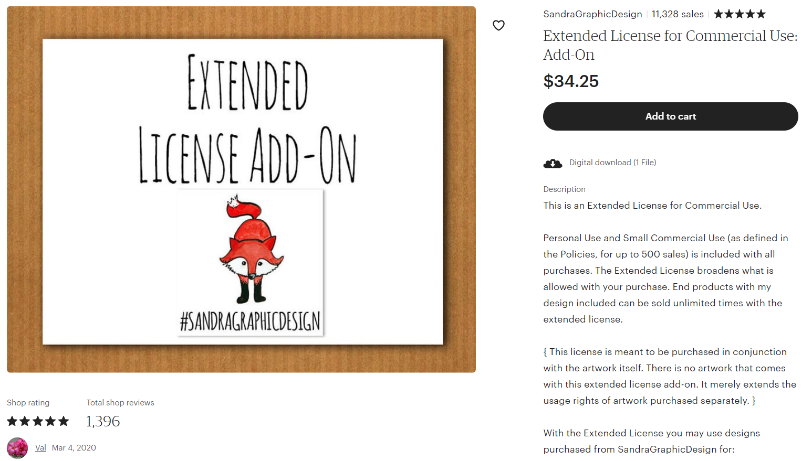
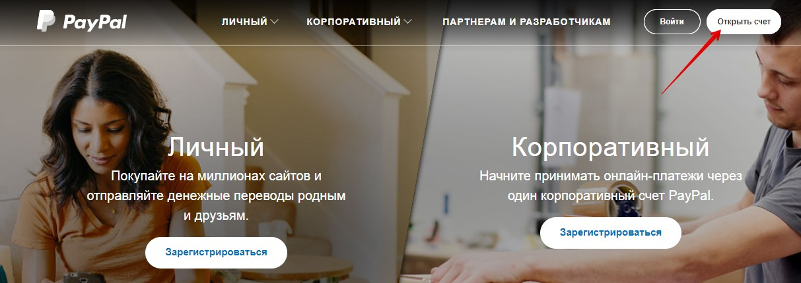
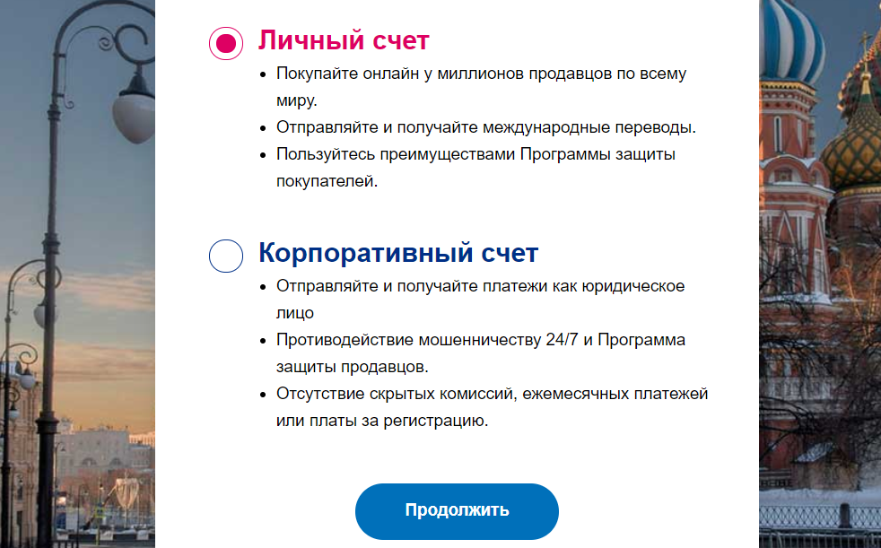
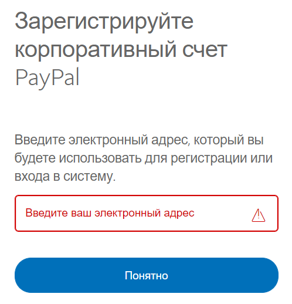
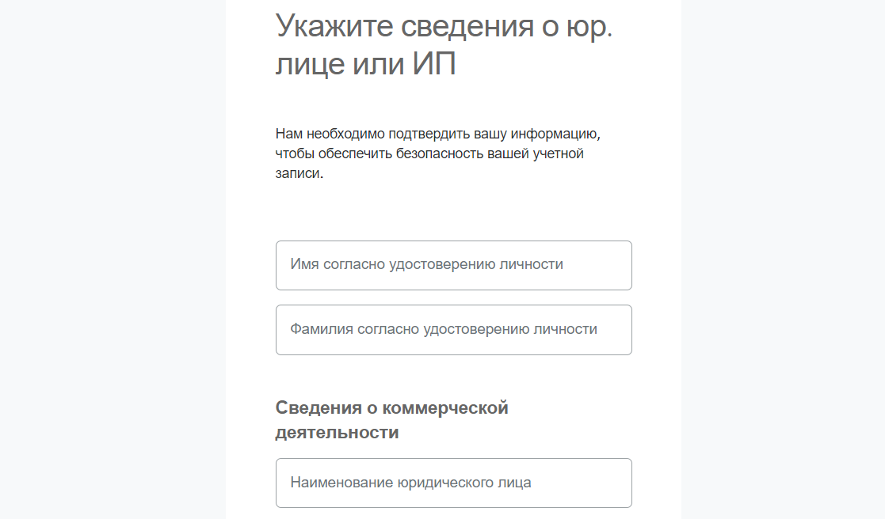
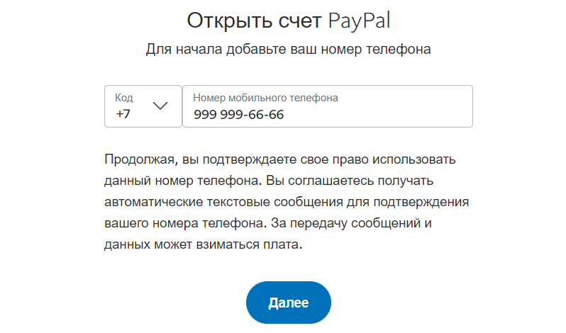
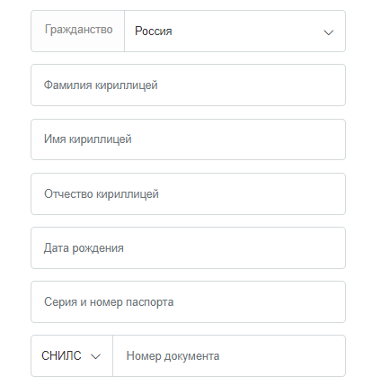
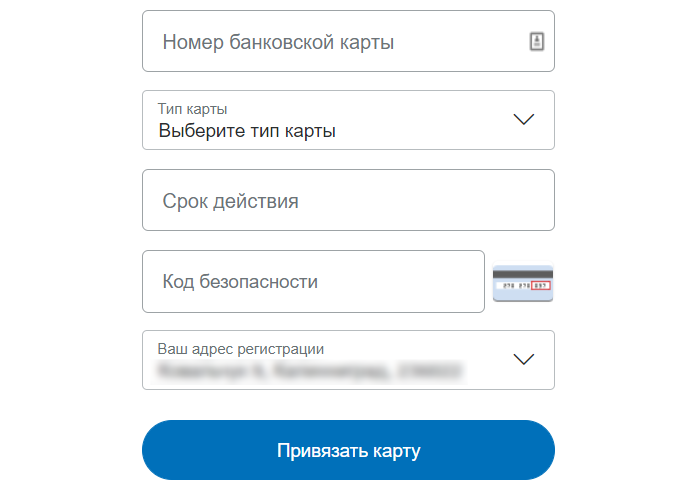
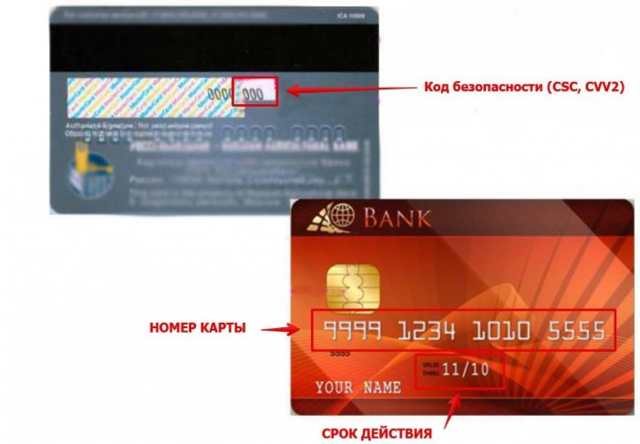

При создании магазина я добавил(а) только 1 бесплатный ли-
стинг. Как добавить оставшиеся 39
Зайдите на страницу Shop Manager – Listings и справа, в самом верху, вы уви-
дите кнопку с надписью «+Add a listing 39 free».
По мере добавления/обновления листингов эта цифра будет уменьшаться.
Можно ли открыть второй/третий магазин
Да, можно, Etsy разрешает это делать.
Для этого зарегистрируйте новый аккаунт на Etsy и уже из-под него создайте
новый магазин.
В качестве платёжных реквизитов можно указать тот же аккаунт PayPal, что и
для первого магазина.
Также в профиле каждого аккаунта (You – Account settings – Account – Edit profile
– About) можно указать ссылку на другие ваши магазины. Сейчас это делать не
обязательно, тогда как раньше это было обязательным правилом площадки.
О чём стоит помнить, создавая второй магазин:
• нельзя продавать в разных магазинах одни и те же товары
• если правила Этси нарушит один магазин, то под «санкции» могут попасть
все ваши аккаунты
Когда стоит открывать второй магазин
Если вы продаёте товары совершенно разных тематик (например, вязаные
шарфы и свечи), то можно попробовать выделить одно из направлений в от-
дельный магазин.
При этом учитывайте, что работы по ведению магазинов прибавится, так как
придётся постоянно переключаться из одного аккаунта в другой.
У меня был магазин, но я его давно забросил(а). Стоит ли от-
крывать новый или лучше реанимировать старый
Здесь всё зависит от того, в каком состоянии у вас предыдущий магазин.
Если там были продажи, покупатели оставляли отзывы – то лучше заняться
вновь им (удалить все товары, загрузить новые и прочее). Так как в глазах бу-
дущих покупателей у вас уже есть некоторый кредит доверия – они видят, что
люди вам доверяли и вы оправдали их ожидания.
Если же в первом магазине не было продаж и отзывов, то тогда можно открыть
новый (хотя и не обязательно). Листингам из новых магазинов Etsy дают не-
большое и временное преимущество в поиске. Первый магазин в этом случае
закрывать не нужно. И обязательно обратитесь к вопросам «Можно ли открыть
новый магазин, закрыв старый?» и «Можно ли открыть второй/третий магазин?»
Можно ли в одном магазине продавать разные типы товаров:
например, handmade и винтаж, цифровые и физические
У Etsy нет никаких ограничений на подобное «совмещение» товаров. Поэтому
выбирайте то, что вам удобнее.
Если вы хотите попробовать новое направление, то лучше сначала не открывать
для этого отдельный магазин, а просто сделать новую секцию в существующем.
Большинство людей находят товары через поиск Etsy, сразу попадая на стра-
ницу конкретного изделия. А потому могут даже не догадываться, что у вас есть
какое-то «смешение» типов товаров.
Как только вы поняли, что спрос есть и товаров становится уже очень много,
можно задуматься и над открытием отдельного магазина.
Можно ли во втором магазине использовать логотип и баннер
из первого
Напрямую Этси этого не запрещают. Но если у вас в магазинах схожие товары
(которые могут быть показаны по одному и тому же поисковому запросу), то
Etsy запрещают вводить в заблуждение покупателей, в том числе похожим
оформление магазинов.
Дословно они говорят, что “нельзя дублировать все или большую часть листин-
гов в своих магазинах, сознательно оформляя свои магазины и листинги иден-
тичным образом (баннер/обложка, логотип, страница About)”.
Можно ли продавать товары с персонажами фильма/мульт-
фильма
Если фильм/мультфильм защищён авторским правом, то правообладатель мо-
жет в любой момент пожаловаться Etsy на ваш товар. И вам необходимо будет
убрать его из магазина. После нескольких подобных жалоб магазин могут за-
крыть.
На Этси продаётся немало товаров, которые так или иначе нарушают права пра-
вообладателей. Это может быть по причине, что их ещё не заметил правообла-
датель. Поэтому риск для магазина всегда есть.
Можно ли продавать цифровые товары с коммерческой ли-
цензией
Если вы продаёте цифровые товары, то сами определяете тип лицензии и ва-
рианты использования ваших работ. Эти ограничения можно указать в описа-
нии товара и в Policies.
Например, любое использование в личных целях, но ограниченное – в коммер-
ческих. Или любое использование, кроме перепродажи. Или печать не более
100 экземпляров, а если больше – предлагать покупателю расширенную ком-
мерческую лицензию отдельным листингом.
Текст лицензии можно оформить в виде текстового файла.
Пример листинга: https://www.etsy.com/listing/281736628

Пример лицензии: https://creativemarket.com/licenses/simple
Если вышеуказанные ссылки не работают (например, данные листинги уда-
лены), откройте файл «Примеры коммерческих лицензий для цифровых фай-
лов» из папки Бонус.

2. Приём платежей PayPal
Как открыть кошелёк PayPal
Регистрация в системе PayPal бесплатна. Для открытия счёта понадобится бан-
ковская карточка.
Шаг 1
Для
начала
регистрации
нужно
перейти
на
страницу
https://paypal.com/ и нажать кнопку Открыть счет.
Шаг 2
После этого нужно выбрать тип счёта: личный или корпоративный. Если у вас
есть своя компания, и вы планируете продавать товары от её лица, то выберите
корпоративный счёт. Если же вы всё делаете сами и у вас нет фирмы, то подой-
дёт личный счёт.
Нажимаем кнопку Продолжить.


Шаг 2.1
Если вы выбрали корпоративный счёт, то далее необходимо указать адрес
электронной почты и сведения о компании.


Шаг 3
Если на шаге 2 вы выбрали личный счёт, то далее введите номер телефона (и
проверочный код из СМС), адрес электронной почты, пароль к PayPal (поста-
райтесь, чтобы он был достаточно надёжным – всё-таки это ваш кошелёк с
деньгами).
Шаг 4 – персональные данные


На этом этапе необходимо ввести достоверную информацию о себе, включая
данные паспорта и СНИЛС или ИНН, – это требование законодательства. Все
данные вводятся на русском языке.
Шаг 5 – данные карты
И последним шагом вам нужно ввести данные своей карты, чтобы совершать
платежи (оплачивать покупки или комиссии Etsy).
Карточка не должна быть пустая, так как PayPal спишет 1-3 доллара для про-
верки того, что вы указали верные данные. Но не стоит волноваться – через
пару дней вы получите их обратно.

Ниже приведена картинка, где объяснено, откуда с карты берутся нужные дан-
ные.
После ввода данных карты нажмите кнопку Привязать карту.
Затем перейдите в свой электронный ящик, найдите свежее письмо от ПайПал
и подтвердите создание аккаунта.
Всё, вы зарегистрировались в PayPal. Поздравляю!
Какой аккаунт Paypal выбрать: корпоративный или личный
Если у вас есть своя компания или вы зарегистрированы как индивидуальный
предприниматель, то выбирайте корпоративный счёт.
Если же вы просто хотите попробовать свои силы и начать продавать на Etsy, у
вас небольшие объёмы производства – то выбирайте личный счёт. В случае
необходимости, вы сможете зарегистрировать второй аккаунт — корпоратив-
ный.
Особенность корпоративного счёта ещё в том, что с него вы не можете оплачи-
вать счета Etsy (то есть делать переводы компаниям). Это можно сделать только
с личного счета или с карты. Также на него нельзя принимать оплаты от компа-
ний.
Можно ли принимать оплаты на личный аккаунт PayPal
Разные сотрудники службы поддержки Пайпал отвечают на этот вопрос по-раз-
ному.
Но у PayPal есть документ «Соглашение с пользователем», в котором написано:
«Вы также можете использовать личный счет для получения платежей за товары
и услуги, за исключением случаев осуществления коммерческой или предпри-
нимательской деятельности. Если Вы планируете использовать свой счет PayPal
преимущественно для продажи товаров, Вам необходимо создать корпоратив-
ный счет».
На деле большинство продавцов на Etsy, с кем мне удалось пообщаться, ведут
все операции именно через Личный аккаунт. Возможно, Пайпал под фразой
«предпринимательская деятельность» подразумевает операции с юридиче-
скими лицами. Или же просто «закрывает глаза» на слишком мелкие операции.
Но также будьте готовы к тому, что в какой-то момент PayPal может заморозить
ваш счёт (и деньги на нём) до тех пор, пока вы не откроете бизнес-аккаунт.
Поэтому, возможно, имеет смысл периодически выводить средства на свой бан-
ковский счет (чтобы не лишиться крупной суммы) или переводить их на ПайПал
кого-то из близких. При этом рекомендуем всегда оставлять некоторую сумму
долларов на случай, если придётся делать возвраты покупателям.
Можно ли открыть счёт ПайПал, если вам нет 18 лет
Нет, нельзя. Но можно зарегистрировать аккаунт на ваших родителей. Главное,
указывайте все данные правдиво – чтобы в случае, если PayPal запросит под-
тверждение документов, вы смогли их предоставить.